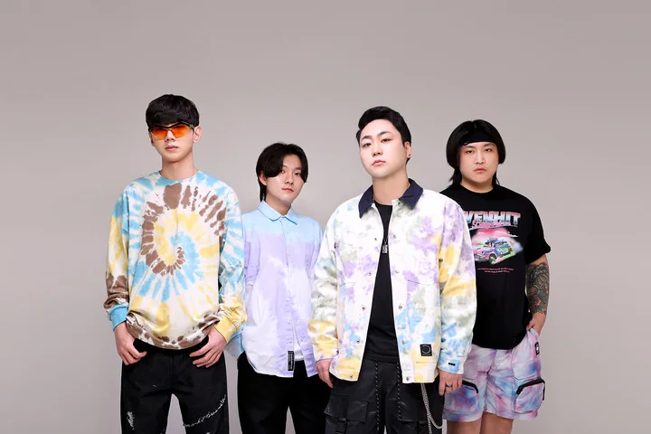
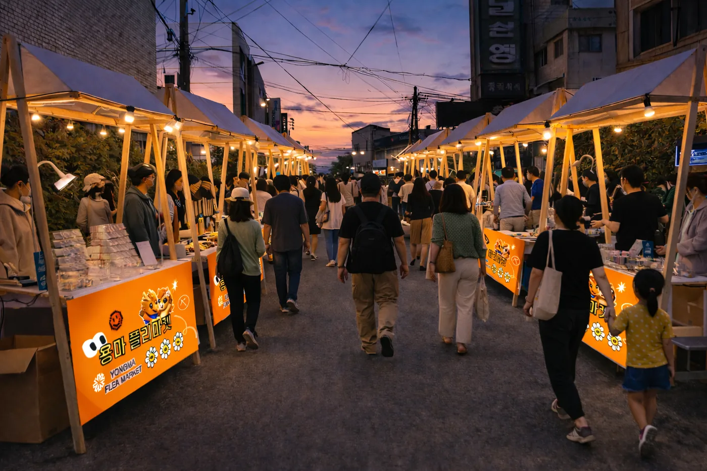
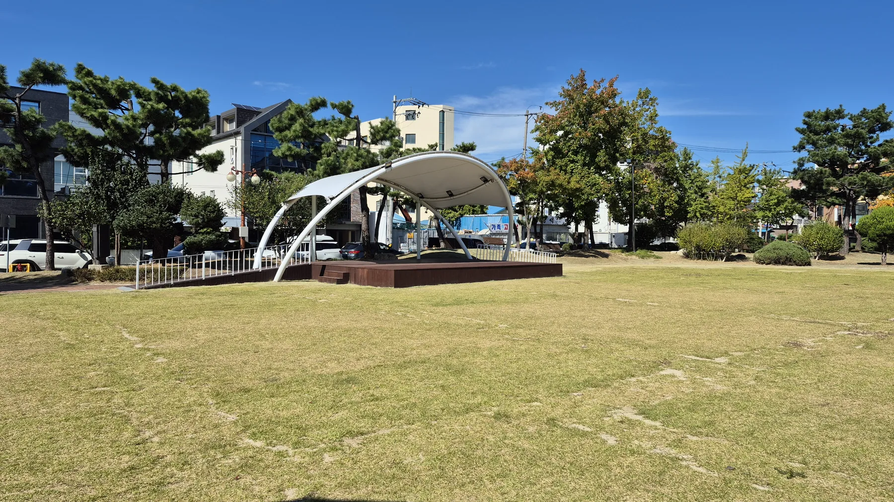
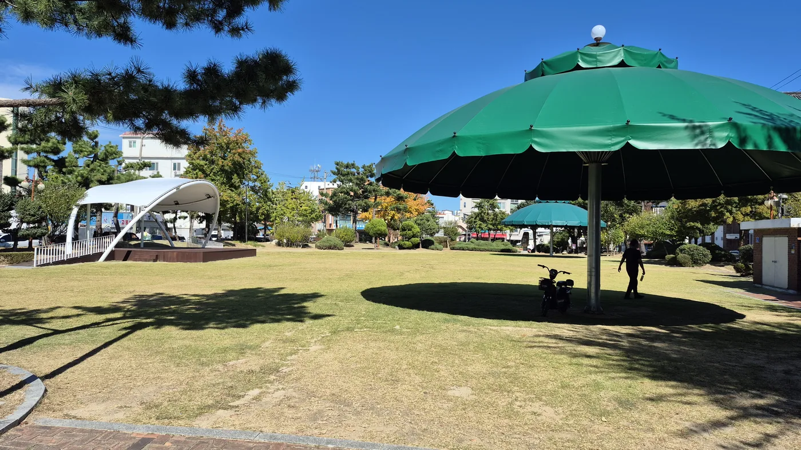

전 점포 할인전
동행축제 기간에 맞춰 상권 내 점포가 함께 여는 할인전입니다. 참여 점포와 품목은 현장 안내판과 홈페이지에서 확인하실 수 있습니다.
중소벤처기업부 동행축제 기간에 맞춰 이틀간 여는 기획공연입니다. 8호 어린이공원 특설무대에서 열리고, 그대로 전국에 중계됩니다.
K-POP · K-DANCE 무대를 중심으로, 골목 전체가 하나의 무대가 되는 이틀입니다.
| 공연명 | K-컬처 기획공연 — 2026 동행축제 연계 |
|---|---|
| 일시 | 2026. 10. 30.(금) ~ 31.(토) · 용마미식거리 운영시간(17:00~22:00) 중 진행 |
| 장소 | 강릉 8호 어린이공원 특설무대 (용마미식거리 인근) |
| 구성 | 1부 고향이 좋다 노래자랑 · 2부 불꽃쇼 · 3부 본공연 K-POP · K-DANCE 무대 · 글로벌 댄스크리에이터 협업 무대 |
| 중계 | STN 자체 중계 인프라로 촬영 · 유튜브 · SNS 동시 송출 |
| 동시 운영 | 전 점포 할인전 · 스탬프투어 · 골목어게인 버스킹 |
| 주최·주관 | 강원지방중소벤처기업청 · 소상공인시장진흥공단 · 강원특별자치도 · 강릉시 | STN미디어 · 포남용마거리 골목형상점가 상인회 |
주민이 직접 무대에 서는 노래자랑으로 열고, 불꽃쇼를 지나 본공연으로 마무리합니다.
부별 시작 시간은 확정 즉시 「소식」과 이 페이지에 올립니다.
방송에서 보던 얼굴이 골목 무대에 섭니다.

※ 추가 출연진과 공연 시간표는 확정 즉시 이 페이지와 「다가오는 일정」에 공개됩니다.
동행축제 이틀간 용마미식거리 전 점포가 함께 움직입니다. 공연을 보고 골목으로 들어오는 동선까지 설계했습니다.
동행축제 기간에 맞춰 상권 내 점포가 함께 여는 할인전입니다. 참여 점포와 품목은 현장 안내판과 홈페이지에서 확인하실 수 있습니다.
어서와존 · 놀아존 · 한번봐존을 돌며 스탬프를 모으는 프로그램입니다. 골목 전체를 한 바퀴 둘러보게 됩니다.
기획공연이 끝난 뒤에도 골목 무대에서 버스킹이 이어집니다. 공연 관람객이 자연스럽게 골목 안으로 들어옵니다.
할인전 참여 점포와 스탬프투어 운영 방식은 확정되는 대로 「소식」에 올립니다.

중소벤처기업부가 여는 전국 단위 소비촉진 행사입니다. 전국의 전통시장·골목상권·중소기업이 같은 기간에 함께 행사를 열어 소비를 끌어올립니다.
강릉 8호 어린이공원입니다. 평소에는 동네 쉼터이지만, 동행축제 이틀간 잔디밭에 특설무대가 들어섭니다.


| 관람료 | 무료 · 별도 신청 없이 누구나 관람하실 수 있습니다 |
|---|---|
| 오시는 길 | KTX 강릉역에서 도보 10분 · 차량 5분 (강릉시 포남동 용마거리 일원) |
| 짐 보관 | 물품보관소 무료 운영 · 운영일 17:00 ~ 22:00 |
| 우천 시 | 기상 상황에 따라 일정이 바뀔 수 있습니다. 변경 시 홈페이지 「소식」과 SNS로 알려 드립니다 |